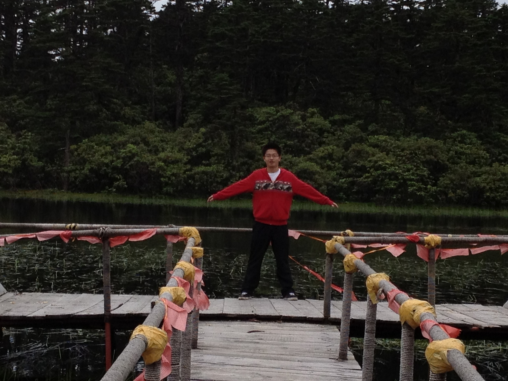

发信人: ZJC (弎和弦), 信区: outdoor
标 题: 【野协团爆】【第二弹】宣传部！
发信站: 饮水思源 (2013年06月05日00:27:45 星期三)
【第二弹】
【宣传部】
部长：张璟聪
副部长：周子豪 刘曦阳 李樵
先上宣传部少一人的合照一张！
懒得把某只P上去了。。大家自行脑补叭。。。

所以说是不能发卖萌的分割线么 - -
咳咳。。。我是部长。。。张璟聪 - -
大家都叫我苍老湿。。。
苍老湿么。。。 = =
screen.width - 200){this.width = screen.width - 200}">
啊啊啊说好的宣传部的小清新呢啊坟蛋！【摔】（╯‘□′）╯（┴—┴
本尊如下 (*。∇^*)。。。

我相信宣传部的潜力是无穷滴！是有很多正能量滴！

一直很喜欢的一句话是：“自然自由自在，如雲如海如山。”
野协是一个自由的地方，附第一次走线昱岭关图一张。。。
screen.width - 200){this.width = screen.width - 200}">
当时好挫的样纸o(°▽、°o)。。。其实现在也蛮挫的 = =
无形分割线又来卖萌了。。。
下面是副部长之周子豪大人！(；°○° )。。于是我把下面的空间交给他啦~
screen.width - 200){this.width = screen.width - 200}">
我是野协的周子豪。和樵爷，刘曦阳，苍老师一起组成了本届野协宣传部。
我在协会的活动中学习到了很多很多，因此我继续留任在协会，第一期待可以学习更多，
不仅是装备知识和户外技巧，还有人生的很多启示。
以上说的略。。。清新，但野协这个地方，不掉点节操是混不下去的啊啊。我会告诉你们
我来协会的真正目的是看到一群贤惠大方的妹纸么？我toujours célibataire 略感寂寞
需要排遣内心的孤独。。。大家就信了吧。。。
下一学年的任务，主要是协助部长张璟聪，完成好野协的招新和各项宣传工作，争取不要
像去年一样水掉的啦~我要说的就这么多，玩得多了大家就混熟啦！
对了，有活动一定要叫我呀，上几次大家去外边玩我都不知道诶T T~

screen.width - 200){this.width = screen.width - 200}">
然后是刘曦阳大人！( ' – ' )！
 screen.width - 200){this.width = screen.width - 200}">
刘曦阳：新宣传部副部长
爱旅行，喜欢山水，不太爱拍照，更愿意用文字去记录，爱攀岩，喜欢那种独自攀登的感
觉
性格比较安静
这学期比较wei ，所以不是很有存在感。。。
搞搞户外，好好生活
screen.width - 200){this.width = screen.width - 200}">
压轴的是樵爷叭。。。
screen.width - 200){this.width = screen.width - 200}">
（默默地插个嘴。。。赶脚好像柯南酱滴样纸 o(#￣▽￣)==O))￣▽￣")o。。。）
攀岩队队长来啦，微电男，不知何时加入了脑残队伍，番号：六脑残，不过也可以叫我小
六，原名：李樵。爱攀岩，爱户外，爱贝爷，爱野协。喜欢登顶后的一览众山小，喜欢野外的静谧星空，喜欢置身自然的心旷神怡。
（不喜欢自拍，难得找到一张照片，大家将就着看，有爆点的都被吸入黑洞了~）
（在此大家可以去关注一下人人@野协黑洞 自黑被黑利器！）
嗯呐，就这样了，欢迎大家来吐槽！( ￣ ▽￣)o╭╯
--
自然自由自在，如雲如海如山。
※ 来源:·饮水思源 bbs.sjtu.edu.cn·[FROM: 183.192.199.243]
※ 修改:·ZJC 于 2013年06月05日12:07:20 修改本文·[FROM: 59.78.50.53]
※ 修改:·ZJC 于 2013年06月06日00:40:45 修改本文·[FROM: 183.192.200.254]
※ 修改:·ZJC 于 2013年06月06日00:41:06 修改本文·[FROM: 183.192.200.254]
※ 修改:·ZJC 于 2013年06月06日00:42:32 修改本文·[FROM: 183.192.200.254]
|